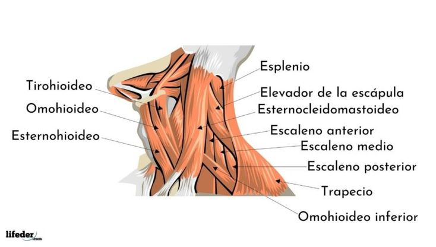

Disección Lateral Interactiva (cuello.jpg)
Digitalizado por IPCED
Exploración Anatómica
Haz clic en cualquiera de las estructuras anatómicas señaladas con círculos pulsantes en la maqueta para desplegar la descripción oficial, origen, inserción e importancia en primeros auxilios e inmovilización de trauma.
Importancia en Emergencias y Trauma
Protocolo de Trauma Cervical - IPCED
En incidentes de alto impacto (accidentes vehiculares, caídas), la tensión o espasmo muscular involuntario de estos grupos intenta proteger la columna cervical. Este estado de "férula natural" puede esconder fracturas inestables:
Examen Rápido de Miología Cervical
Pon a prueba tu conocimiento para emergencias médicas
P1. ¿Qué músculo corre de forma diagonal cruzando todo el cuello y sirve de hito para localizar el pulso de la arteria carótida?
P2. ¿Cuál es el grupo de 3 músculos (Anterior, Medio y Posterior) que elevan la primera y segunda costilla durante el esfuerzo inspiratorio de un paciente con asma grave?
P3. ¿Qué músculo posee un vientre superior e inferior y cruza el triángulo posterior del cuello en profundidad para insertarse en el hioides?